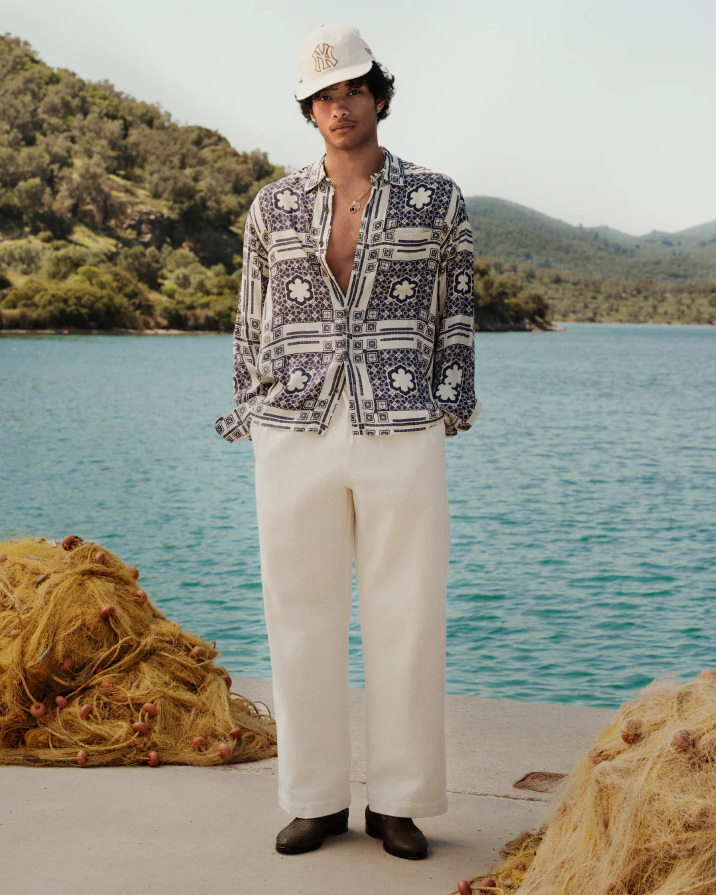
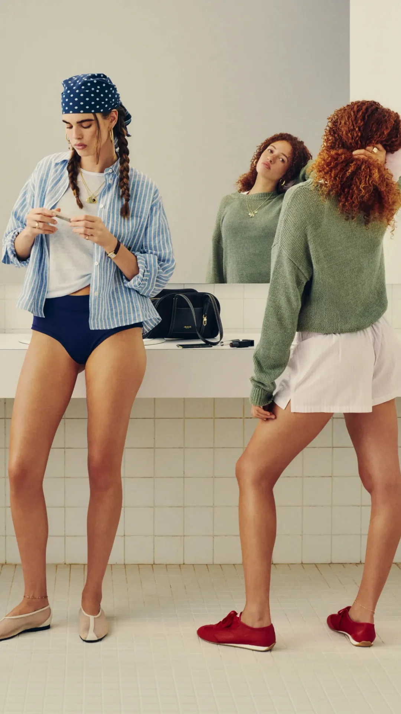
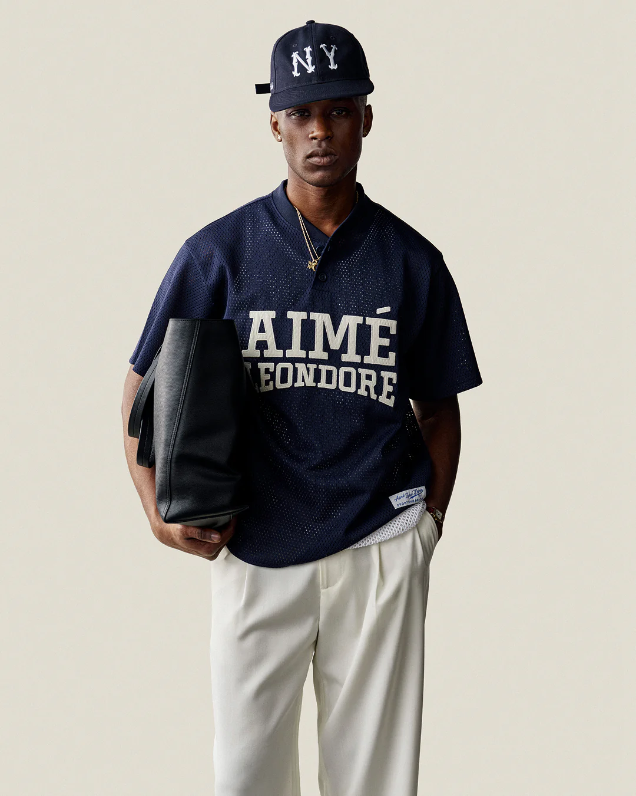
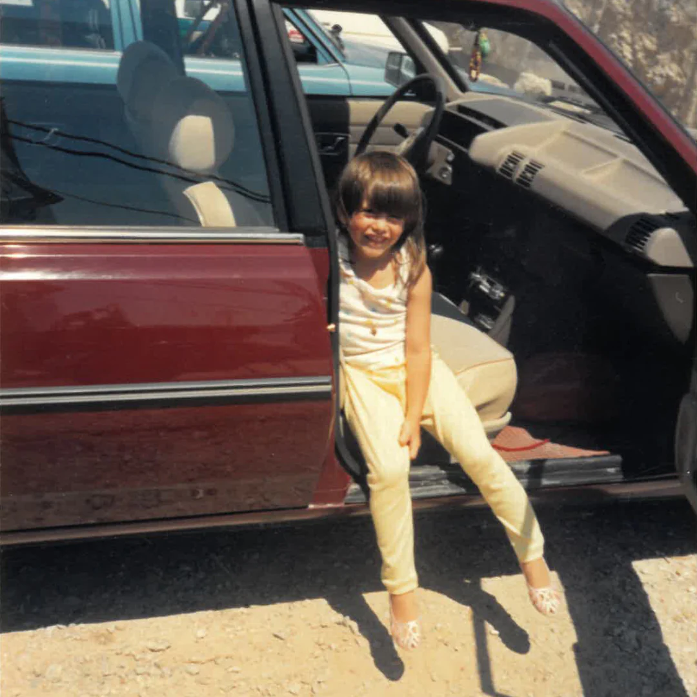

#F2E7D5242, 231, 213hsl(37 53% 89%)
background
reference-ds-03-aimeleondore-com / site-specific
DS site-specific para Aime Leon Dore.
menu completo do DS


tokens de cor
A paleta principal vem do DS site-specific; o bloco de sinais mostra cores encontradas nos arquivos locais para auditar a origem visual.
#F2E7D5242, 231, 213#1E3A2F30, 58, 47#1A243326, 36, 51#2F5E4647, 94, 70#7A2E32122, 46, 50#B89652184, 150, 82#FFFFFF255, 255, 255gradientes / opacidade
Escala usada: 100, 86, 64, 40, 18 e 8. Opacidade nunca substitui contraste ou foco.
linear-gradient(135deg, #F2E7D5, #1A243355, #2F5E4633)hero/background
linear-gradient(180deg, #F2E7D5ee, #F2E7D555)image overlay
radial-gradient(circle at 20% 20%, #1A243344, transparent 34%), radial-gradient(circle at 80% 72%, #2F5E4633, transparent 40%)motion/hover
source color audit
Esses chips evitam que o preview vire paleta inventada: sao pistas reais do HTML/CSS extraido.
type system
Fontes locais detectadas: 1d36beab13aec115_roboto_n7.f38007a10afbbde8976c.woff2, 3206fdd5999cd60d_opensans_n7.a9393be1574ea8606c.woff2, 469b203b541fb330_financier-display-web-medium.woff2, 4e0c29cef3bafc41_soehne-web-buch.woff2, 770d0041328e2168_roboto_n4.2019d890f07b1852f56c.woff2, 9157956f82e1cf63_financier-display-web-medium.woff, a8c255ea1f079e60_6ceed230-b2b3-4422-b048-4aa116.woff2, f9b79b73de166210_opensans_n4.c32e4d4eca5273f6d4.woff2. Fallback sempre preserva legibilidade.
tipografia detalhada
A tipografia detalhada abaixo documenta pesos, tamanhos, line-height, tracking e uso estrategico para cruzar com o DS do cliente.
| Role | Family | Weight | Size | Line | Tracking | Uso |
|---|---|---|---|---|---|---|
| site-display | display | 700-900 | clamp(4rem,8vw,9rem) | .86-.94 | 0 | Lookbook, heritage urbano e loja editorial. |
| site-label | mono/ui | 780-900 | .72rem | 1.2 | .14em | menu/status/tags |
| site-body | ui | 400-560 | 1rem | 1.55-1.7 | 0 | moderno descolado / street heritage / editorial |
| h1-h6 | display/ui | 620-900 | clamp + rem | .86-1.25 | 0/.14em | escala completa |
| body-lg/body/body-sm | ui | 400-560 | 1.22rem / 1rem / .9rem | 1.45-1.7 | 0 | leitura |
| caption/label/helper | mono/ui | 420-860 | .72rem-.8rem | 1.2-1.35 | .12em/0 | metadados |
efeitos e mouse overs
Cada efeito usa assets, cores e componentes deste site. O objetivo e documentar o comportamento para gerar um DS final novo, nao copiar a tela.


componentes
Componentes, menu board e reference slip foram reescritos com nomes e funcoes do site, mantendo contrato global sem repetir atributos em cada item.
Todos herdam default, hover, focus-visible, active, loading, disabled, reduced-motion, contraste AA, escala global de opacidade e fechamento por Esc quando houver overlay/modal.
lookbook fade + estados globais.
Hero full viewport como lookbook editorial, nao vitrine comum.caption slide + estados globais.
Menu parece clube/colecao com labels discretos.club ticker + estados globais.
Cards alternam produto, editorial e cultura.release diary reveal + estados globais.
Motion de lookbook: fade, caption reveal e ticker lento.lookbook fade + estados globais.
Hero full viewport como lookbook editorial, nao vitrine comum.caption slide + estados globais.
Menu parece clube/colecao com labels discretos.club ticker + estados globais.
Cards alternam produto, editorial e cultura.release diary reveal + estados globais.
Motion de lookbook: fade, caption reveal e ticker lento.Default, hover, active e disabled.
lookbook fade + tooltip/modal.
Tons escuros exigem superficie clara.
cards e secoes
Esta sessao mostra como repetir componentes sem repetir o mesmo quadro em todos os DSs. Os textos pequenos usam sinais do HTML extraido quando disponiveis.
lookbook fade; card derivado do site extraido.
caption slide; card derivado do site extraido.
club ticker; card derivado do site extraido.
release diary reveal; card derivado do site extraido.
lookbook fade; card derivado do site extraido.
caption slide; card derivado do site extraido.
decisoes estrategicas
story split parallax
Imagem e texto trabalham juntos: a camada visual responde ao scroll, enquanto as regras registram o que deve influenciar o DS final.
caption slide
icones
Stroke 1.8, currentColor, foco pelo accent e hover sem mudar dimensao.
handoff de referencia
riscos / mitigacoes
Tokens que cruzam depois: hero, componentes, motion, menu, paleta, gradientes, cards, secoes e story parallax.
motion contract
Amostras reiniciaveis para auditar entrada, saida, flyout, draw-line e parallax. Cada DS preserva motion proprio do site.